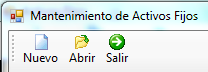
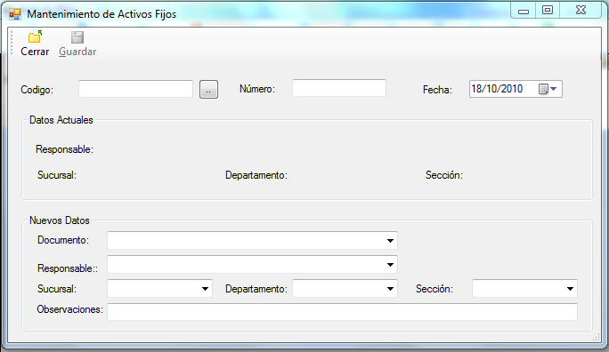
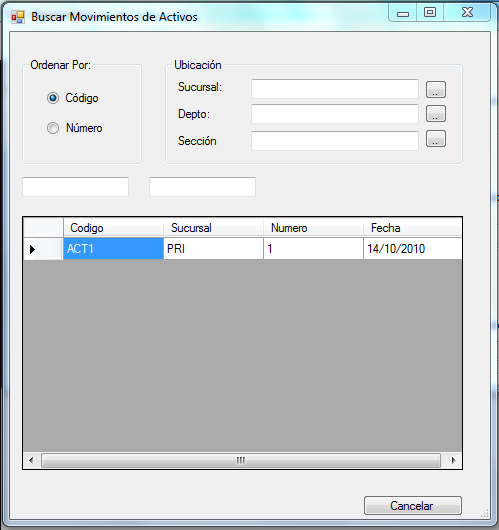
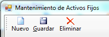

Figura31
Nuevo:
Esta opción nos permite registrar nuevos movimientos que haya tenido el activo. Al hacer clic en este botón se habilitarán los cuadros de texto parta detallar el movimiento del activo (Figura32).

Figura32
Abrir:
Al hacer clic en el botón abrir se desplegará un cuadro de dialogo con el listado de los movimientos de los activos (Figura33). Al hacer doble clic sobre el activo requerido se desplegará los detalles del movimiento permitiendo que el usuario modifique o elimine el movimiento.

Figura33
Guardar/Eliminar:

Guardar:
Cuando se crea un nuevo movimiento este botón guarda las características del mismo y cuando se abre un movimiento existente el botón guardar actualiza los datos que el usuario haya modificado.
Eliminar:
Está opción se presenta cuando se abre un movimiento existente, al hacer clic en este botón el movimiento se eliminará permanentemente, por lo cual antes de realizar esta acción se desplegará un cuadro de dialogo pidiendo la confirmación de la eliminación del movimiento.